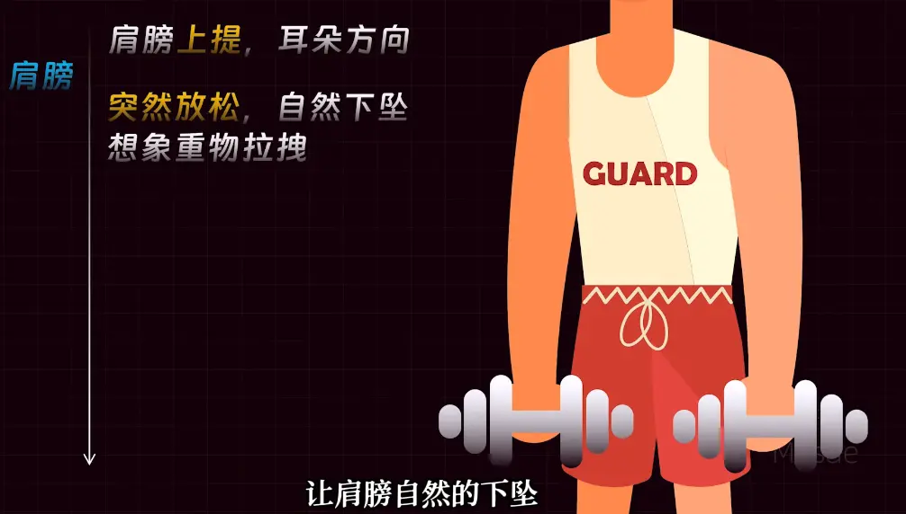

# 茗起
我们都知道，人肯定要睡觉，但躺在床上就是睡不着，这该如何解决！
请看下文！
# 教程
# 美国海军两分钟入睡法
优点:
- 速度快
- 不限姿势
- 无视环境
- 无视咖啡因
# 实操
共有五个点！
# 1. 防水面部肌肉
先闭上眼睛，有意识的从上到下脸部，依次放松！
如图:
感觉这些部位如同失去力量一样！自然地松弛！
下巴放松就好，嘴可以张着，舌头自然放到口腔底部！
# 2. 放松肩膀和手臂
如图，肩部自然提起，让后放下
坚持几秒之后肩膀自然下垂，感觉有哑铃在拉着你！

胳膊就像举起哑铃一样，让后再放松，感觉肌肉从紧张到松弛！
让后再是拳头，将它握拳再缓慢放开！
# 3. 放松胸部和腹部
如图，先是深呼吸，将气体充入肺部，其次缓慢吐气！
再是腹部，首先发力，感觉有人要打你一拳，之后再放松腹部，如同海绵一样！
# 4. 放松腿部肌肉
按照下面顺序，分别放松大腿，小腿，脚

要想想自己踩在软绵绵的云上如此！
# 5. 清空大脑
此时你各个区域都放松了，这时候
将注意力集中到呼吸上，又慢又有节奏的去呼吸
杂念来了不要去驱赶，将注意力拉到呼吸上！
这个时候就可以入睡了
# 原理
人的神经有两个，一个是交感神经，一个副交感神经
你的紧绷可以使其发生交感神经，再放松就可以转到副交感神经
此时身体会感到轻松，副交感神经就会产生困倦，传到大脑皮层，这时候就能产生困觉入睡了！
# 4-7-8 呼吸法
# 准备姿势
找一处安静舒适的地方，你可以选择舒服地坐下，保持背部挺直但不僵硬；也可以躺下，确保全身肌肉都能自然放松。轻轻闭上眼睛，让自己的注意力逐渐集中到呼吸上，为接下来的呼吸练习做好准备。
# 第一步：呼气
微微张开嘴巴，缓慢且平稳地呼气，同时发出轻柔的 “呼” 声，尽量将肺部的空气排空，感受腹部逐渐收缩，让身体做好迎接新鲜空气的准备。
# 第二步：吸气
闭上嘴巴用鼻子进行吸气。吸气过程要缓慢而均匀，同时心里默数 4 个数，比如 “1、2、3、4”。在吸气时，要感觉到空气缓缓进入腹部，腹部如同气球一样慢慢膨胀起来，使空气充分填满肺部。
# 第三步：屏气
当吸气完成后，停止吸气，屏住呼吸。在屏气的同时，心里默数 7 个数，即 “1、2、3、4、5、6、7”。此时，要保持身体的放松，不要过于紧张，感受空气在体内的停留。
# 第四步：呼气
再次张开嘴巴，缓慢地呼气，这次呼气的时间要更长，心里默数 8 个数，例如 “1、2、3、4、5、6、7、8” 。尽量将肺部的空气彻底排出，感受腹部再次收缩，让身体完全释放出刚才吸入的空气。
以上就是一个完整的 4-7-8 呼吸循环，建议重复进行 3 到 4 次为一组，每天可进行 1 至 2 组练习。长期坚持，有助于缓解压力、放松身心。
希望大家都能通过 4-7-8 呼吸法，收获内心的平静与安宁。如果在练习过程中有任何疑问，欢迎在评论区交流。
# 视频
<video src="https://mingcy.cn/2025/02/12/sleep/ 极速入睡.mp4" position= "absolute" width="100%" height="100%" controls="controls"></video>